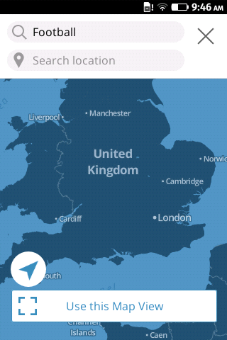
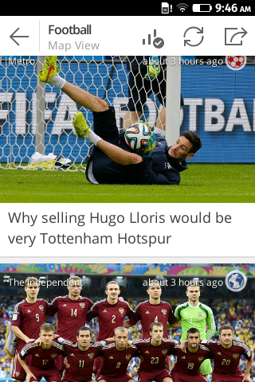
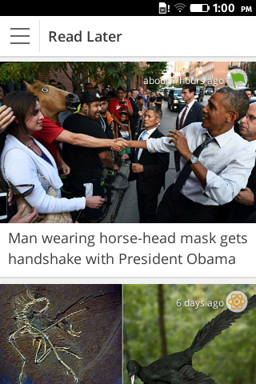
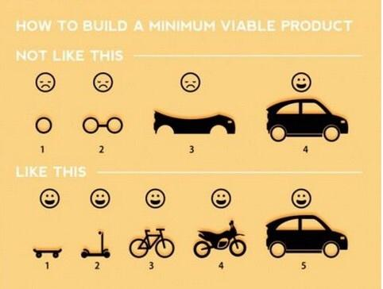
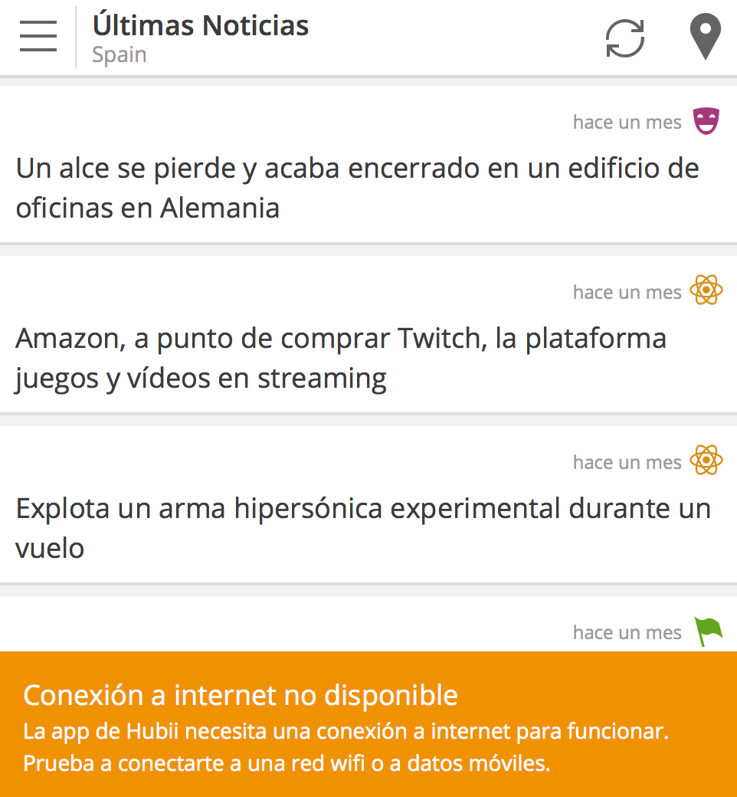

USUARIO NO AVISADO DE SU CONEXIÓN

Miguel Ángel Durán 29 #Barcelona
Me gustan los osos panda. Desarrollo cosas.
Y tengo una adicción...
- App para leer noticias según tu localización.
- Exclusiva de Firefox OS. (por ahora)
- Precargada en nuevos dispositivos Firefox OS de Telefonica.
- Ayuda de Mozilla. (localizaciones, soporte...)



Si tu idea ya existe. Hazla mejor.
Mi recomendación: App JS - http://code.kik.com/app/2/
¿Realmente las necesitamos?
Zepto(25KB)
VS.
jQuery(84KB)

PERO NO HAY QUE VOLVERSE LOCO.
Hacer que funcione -> hacerlo bien -> hacerlo rápido.
¡Recuerda añadir la codificación a tu HTML!
<meta charset="utf-8" />
En el <head>
<script type="text/javascript" src="l10n.js"></script>
<link rel="prefetch" type="application/l10n" href="data.ini" />
En el <html>
<button data-l10n-id="test">This is a test</button>
En el data.ini
[en-US]
test = This is a test
test.title = click me!
[es]
test = Esto es un test
test.title = ¡clica aquí!
En Javascript
var message = document.webL10n.get('test');
var message2 = document.webL10n.get('test2');
var message3 = document.webL10n.get('test3');
console.log( message );
console.log( message2 );
console.log( message3 );
¡Usa un alias! Haz tu código más legible
var _ = document.webL10n.get;
var message = _('test')
var message2 = _('test2')
var message3 = _('test3')
Detectando casos especiales
// localize the timeago
var language = navigator.language
if ( language === 'es' ) {
// entonces es español
}
Determinar si podemos cachear información
, sobretodo la que venga de queries al servidor.
Podemos utilizar localStorage o indexedDB.
También para guardar las opciones del usuario
Librería lscache de Pamela Fox
Ejemplo de uso de la librería lscache (localStorage)
// recupera la información de localstorage
var ultimasnoticias = lscache.get( 'ultimasnoticias' );
if ( !ultimasnoticias ) {
// recuperamos las noticias del servidor con AJAX
}
Poder dar estilo cuando el usuario está haciendo tap en algún botón
document.addEventListener("touchstart", function(){}, true);
Ahora podremos usar en CSS los estilos :hover sobre los botones.
.buton:hover {
opacity: 0.5
}
No podemos usar el snippet por culpa del Content Security Policy. Usemos "Measurement Protocol".
$.post( 'http://www.google-analytics.com/collect',
{ v: 1,
tid: 'UA-264323398-4',
dp: nombre_pagina,
t: 'pageview',
ul: navigator.language
}
)
Es una muy buena práctica avisar al usuario que no tiene conexión. Y más si tu aplicación necesita internet para funcionar.
window.addEventListener( "offline", function () {
$( '#no_connection' ).addClass( 'show' )
});

También tiene sus inconvenientes
(aprendizaje, compilación, sacar todo el potencial)
.box { /* version en CSS */
background-color: #010101;
color: #f0f0f0;
-webkit-border-radius: 5px;
-moz-border-radius: 5px;
border-radius: 5px;
}
.box .button {
-webkit-border-radius: 5px;
-moz-border-radius: 5px;
border-radius: 5px;
color: #010101;
background-color: #f0f0f0;
}
.box // version en Stylus - 1
background-color #010101
color #f0f0f0
-webkit-border-radius 5px
-moz-border-radius 5px
border-radius 5px
.button
-webkit-border-radius 5px
-moz-border-radius 5px
border-radius 5px
color #010101
background-color #f0f0f0
border-radius()
-webkit-border-radius arguments
-moz-border-radius arguments
border-radius arguments
.box // version en Stylus - 2
background-color #010101
color #f0f0f0
border-radius 5px
.button
border-radius 5px
color #010101
background-color #f0f0f0
$whiteColor = #f0f0f0
$blackColor = #010101
.box // version en Stylus - 3
background-color $blackColor
color $whiteColor
border-radius 5px
.button
border-radius 5px
color $whiteColor
background-color $blackColor
var mensaje = "Hola Mundo";
var mostrarMensaje = function( mensaje ) {
alert( mensaje );
}
mostrarMensaje( mensaje );
mensaje = "Hola Mundo"
mostrarMensaje = ( mensaje ) -> alert( mensaje )
mostrarMensaje( mensaje )
var mensaje, mostrarMensaje;
mensaje = "Hola Mundo";
mostrarMensaje = function(mensaje) {
return alert(mensaje);
};
mostrarMensaje( mensaje );
Empresas como Dropbox y AirBnB lo usan.
El camino del sabio
es aprender algo todos los días
Proverbio chino